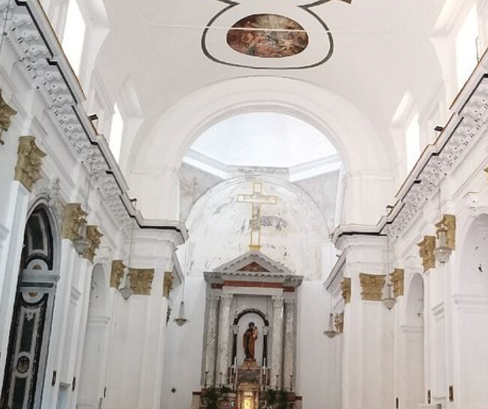
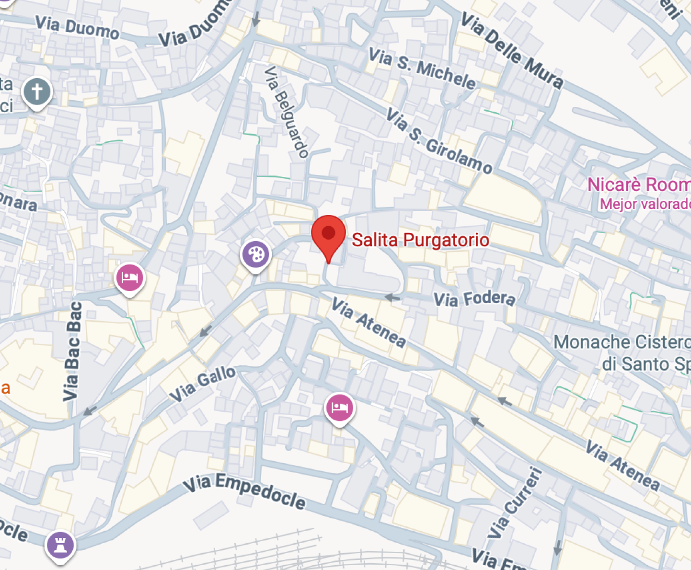

Agrigento es una de las ciudades más emblemáticas de Sicilia, conocida por su extraordinario legado de la antigua Grecia.
Su paisaje está marcado por colinas doradas, el azul del mar y algunos de los templos mejor conservados del mundo clásico.
Caminar por Agrigento es recorrer siglos de historia donde el pasado y el presente conviven en perfecta armonía.
PIAZZA PURGATORIO


Piazza Purgatorio, situada en el casco antiguo de Agrigento, es un espacio cargado de simbolismo histórico y espiritual.
Bajo la plaza se extiende una compleja red de hipogeos excavados por los griegos hace más de dos mil años, utilizados como túneles y sistemas de agua.
En la superficie, la iglesia del Purgatorio refuerza la relación de la ciudad con el culto a las almas, muy presente en una época marcada por epidemias y conflictos, creando un fuerte vínculo entre la vida cotidiana y el mundo subterráneo.
Atardecer en el Valle de los Templos
Visitar el Valle de los Templos al atardecer es una experiencia única.
La luz dorada ilumina las columnas milenarias mientras el paisaje se transforma lentamente en un escenario casi irreal.
Es el momento perfecto para conectar con la grandeza de la antigua Grecia y comprender la importancia histórica de Agrigento.